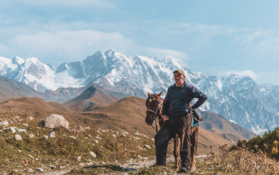
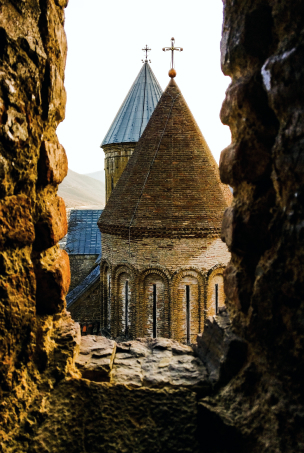
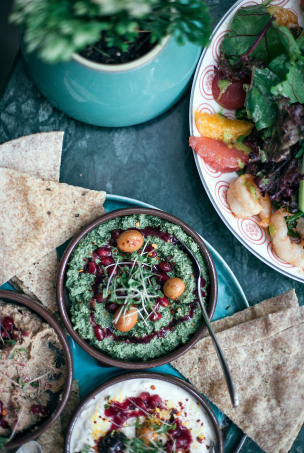
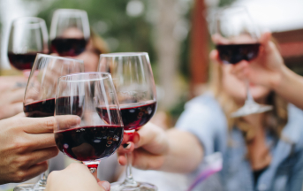

10 золотых правил для поездки в Грузию
Сегодня мы подготовили для вас топ-10 правил поездки в Грузию. Мы надеемся, что эта статья развеет некоторые заблуждения и ложные ожидания и сделает ваш отдых в Грузии волшебным.
-
Грузинское гостеприимство
Очень часто встречаются отзывы, что нет никакого грузинского гостеприимства. Чаще всего - от людей, которые сами не умеют дружить и быть радушными.
Запомните: грузинское гостеприимство работает по полной, если вы сами готовы открыться и быть другом.
-
Хорошие экскурсии
Чтобы не разочароваться в экскурсионной программе, стоит заранее позаботиться о выборе гида. К сожалению, в Грузии нет обязательной сертификации гидов и экскурсионных бюро, поэтому есть вероятность нарваться на непрофессионалов.
 -
Вкусная еда
Многие полагают, что в Грузии они смогут есть вкусную еду и пить вино на каждом шагу, при этом тратя на это сущие копейки. Это не так.
В Грузии действительно можно найти недорогие и хорошие кафе, а также рестораны, но для этого нужно читать отзывы и рекомендации. Так вы не разочаруетесь в грузинской кухне и не получите пищевое отравление, а вместо этого приобретете только приятные впечатления и сытость для прогулок.
 -
Быстрый сервис
С этим нужно просто смириться. В Грузии, как впрочем и других регионах Кавказа, не привыкли торопиться. Вам стоит набраться терпения и принять с улыбкой нерасторопных сотрудников.
-
Хорошее вино
Грузия считается родиной вина, и здесь принято говорить: «Плохого вина не бывает. Бывает только хорошее и очень хорошее вино!». Однако, нужно понимать, что и здесь вы можете купить не очень хорошее вино.
Не стоит брать вино в туристических местах. Если покупаете домашние вина, берите ту бутылку, из которой вам наливали на пробу.
-
Не говорите о политике
Нам досталось немало грехов из грузинской истории, которые мы должны взять на себя. Этого нам вполне достаточно, не следует принимать на свои плечи еще и грехи русской истории.
М. Мамардашвили, выдающийся философ XX века.«Все плохое происходит от политиков» — Так говорят в Грузии. Вы приехали отдыхать, а не обсуждать политические игры и доказывать свою правоту. Просто опустите эти темы и проведите отпуск счастливо.
-
Не ругайтесь
Мат и ненормативная лексика понятны не только старшему поколению, знающему русский, но и всему остальному населению, и воспринимается очень негативно. Не стоит использовать мат как в обращении к грузинам, так и в общении друг с другом. Если ругаться при грузинах, они не просто за это «по голове не погладят», реакция может быть абсолютно непредсказуемая, вплоть до драки, а Вам, наверняка, не нужны лишние проблемы в отпуске :).
-
Наркотики в Грузии
Не стоит баловаться наркотическими веществами в Грузии. Несмотря на то, что в законодательство внесены предложения на легализацию легких наркотиков, грузинская полиция серьезно следит за такими правонарушениями.
-
Не все знают русский язык
Несмотря на то, что Грузия является территорией постсоветского пространства, здесь далеко не всего знают русский. Как правило, на русском языке говорят люди старшего возраста, а молодёжь лучше знает английский язык.
-
Грузинские мужчины не женятся на второй день знакомства
Да и вообще редко женятся на девушках не своей национальности. Яркие, харизматичные и горячие грузинские кавалеры будут ухаживать за вами как никто, звать замуж и обещать золотые горы. Но стоит помнить, что это всего лишь романтическое приключение длинной в ваш отпуск. Не более того.